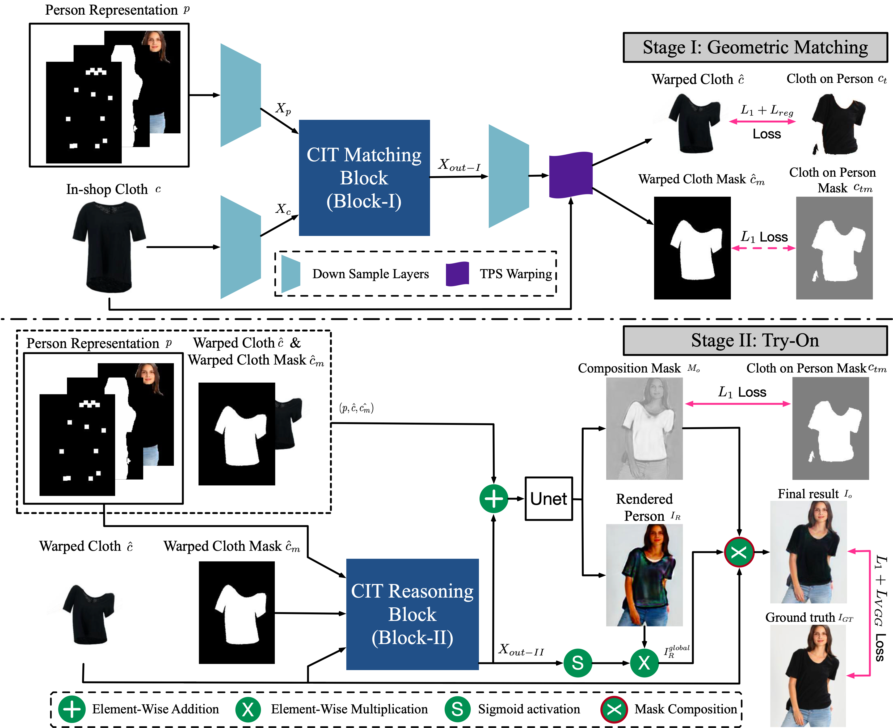
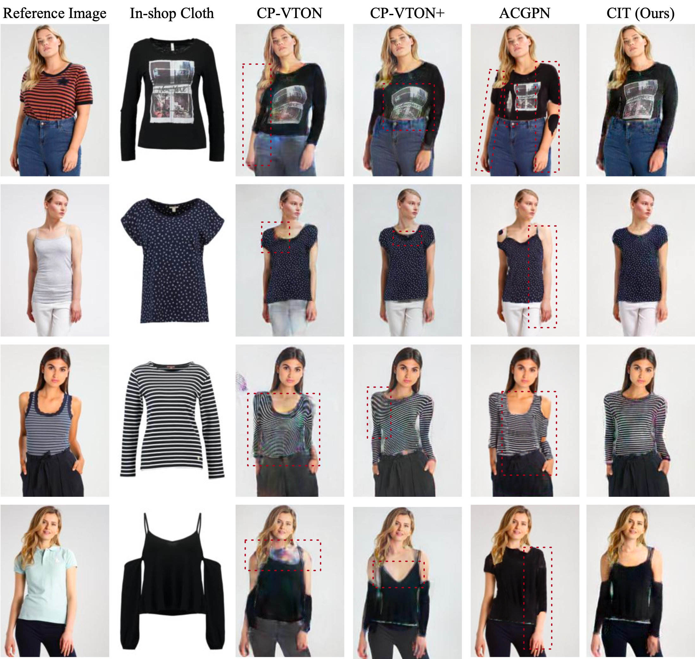
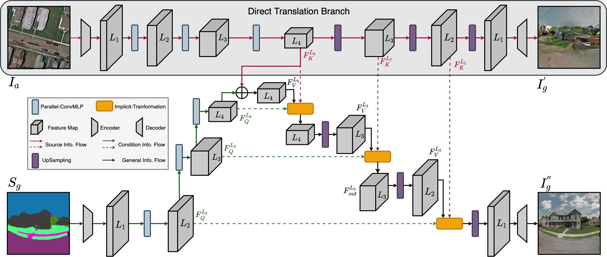
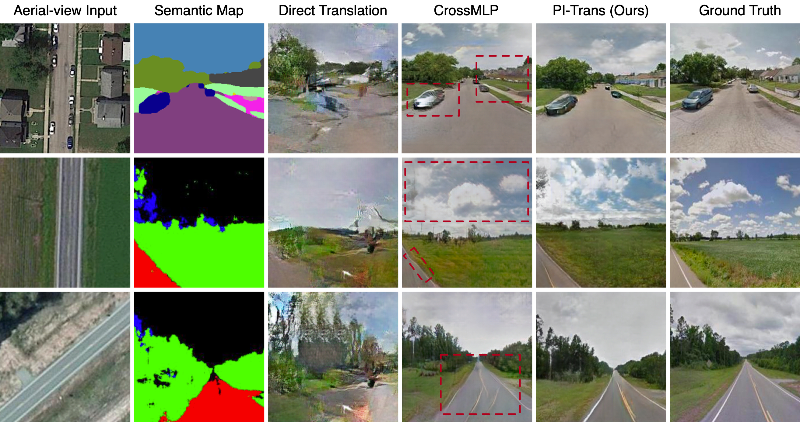

Selected Publications
|


|
Bin Ren, Hao Tang, Fanyang Meng, Runwei Ding, Philip Hs Torr, Nicu Sebe Transactions on Multimedia Computing Communications and Applications (ACM ToMM), 2023 paper / code / bibtex |


|
Bin Ren, Yahui Liu, Yue Song, Wei Bi, Rita Cucchiara, Nicu Sebe, Wei Wang Computer Vision and Pattern Recognition (CVPR), 2023 paper / code / bibtex |
|


|
Bin Ren, Hao Tang, Yiming Wang, Xia Li, Wei Wang, Nicu Sebe International Conference on Acoustics, Speech and Signal Processing (ICASSP), 2023 paper / code / bibtex |